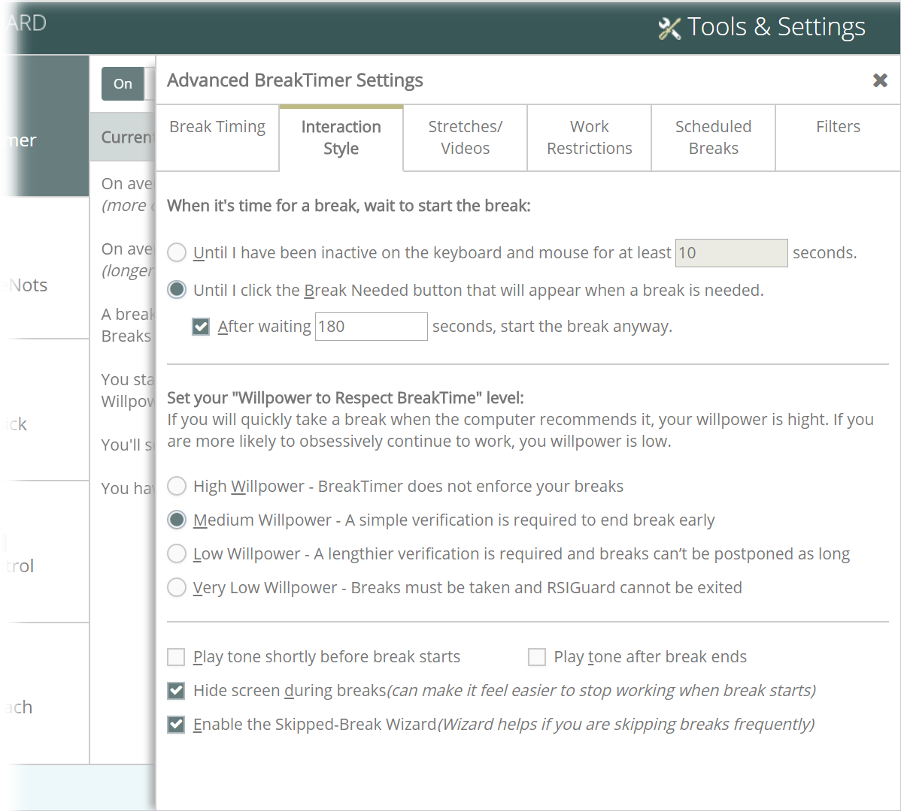

Watch a video tutorial on setting up the Interaction Style.
Interaction Style Settings

When it's time for a break - This setting lets you decide how break suggestions are presented to you - automatically or "politely" (manually).
Automatic Option - If you select Until I have been inactive, BreakTimer waits to start the break until you have been inactive for several seconds. This method avoids interrupting you by looking for idle periods in your computer activity. For example, breaks are not suggested while you are in the middle of typing a sentence or performing a mouse selection. However, the break window pops up when you pause (for the specified number of seconds). This can be a problem if your job doesn't allow you to be interrupted (for example, call center or customer-facing work).
Polite Option - If you select Until I click the Break Needed, BreakTimer waits to start the break until you click Break Needed. This method avoids interrupting you, waiting for you to manually start breaks by clicking Begin Break. This option only works well if you have the discipline to start breaks. However, the option may be useful or necessary if your job tasks don't permit interruption. If you don't like where the "Begin Break" button is located on your screen, you can move it to a new location (e.g., somewhere that won't interfere with your work, but that is visible and noticeable). BreakTimer remembers this new location for the future.
After waiting, start the break anyway - When you check this setting, if the break doesn't start within the specified number of seconds (either because you use the Automatic option and you never go idle, or because you use the Polite option and you never click Begin Break) the break starts automatically.
Set your Willpower - For many people, it can be challenging to overcome the momentum of computer work to take suggested breaks. The temptation to click Skip Break or Postpone Break in the break window can be overwhelming if you are in the middle of something. Yet, when you are not so busy, you may realize that breaks are important and that you should avoid skipping and postponing breaks unless absolutely necessary. The Willpower to Respect BreakTimer setting lets you decide how much BreakTimer should try to encourage you to complete breaks based on your own assessment of your personality. When a break occurs, a user who has specified they have:
High Willpower - Can quickly skip a break and can postpone breaks up to 32 minutes.
Medium Willpower - Can end breaks with a simple verification and can postpone breaks up to 16 minutes.
Low Willpower - Can skip breaks with a two-part verification and can postpone breaks up to 12 minutes.
Very Low Willpower - Can't skip breaks and can postpone breaks up to 4 minutes.
Be sure that you balance the frustration of break interruption with the benefit of taking breaks when the computer suggests them and set your willpower level realistically. If you find yourself frequently postponing or skipping breaks when you really don't need to, try lowering the willpower setting to match reality.
Play tone shortly before break - If enabled, a sound plays when BreakTimer estimates that a break is about 2 minutes away.
Play tone after break ends - If enabled, a sound plays when your break is over. This helps you know you can return to working on the computer if during the break you leave your workstation.
Hide screen during breaks - If enabled, hides other applications on your screen during your breaks. If you have a hard time taking breaks because you obsessively keep looking at your work (behind the break window), then this option helps you take your focus off your work.
Enable the Skipped-Break Wizard - If you frequently skip breaks, the Wizard offers quick solutions that adjust the way the BreakTimer works, to make taking breaks easier for you. The wizard suggests 4 possible reasons that may be causing you to skip breaks frequently, and then offers 2 or 3 solutions for each reason.
 . This method avoids interrupting you, waiting for you to manually start breaks by clicking Begin Break. This option only works well if you have the discipline to start breaks. However, the option may be useful or necessary if your job tasks don't permit interruption. If you don't like where the "Begin Break" button is located on your screen, you can move it to a new location (e.g., somewhere that won't interfere with your work, but that is visible and noticeable). BreakTimer remembers this new location for the future.
. This method avoids interrupting you, waiting for you to manually start breaks by clicking Begin Break. This option only works well if you have the discipline to start breaks. However, the option may be useful or necessary if your job tasks don't permit interruption. If you don't like where the "Begin Break" button is located on your screen, you can move it to a new location (e.g., somewhere that won't interfere with your work, but that is visible and noticeable). BreakTimer remembers this new location for the future.